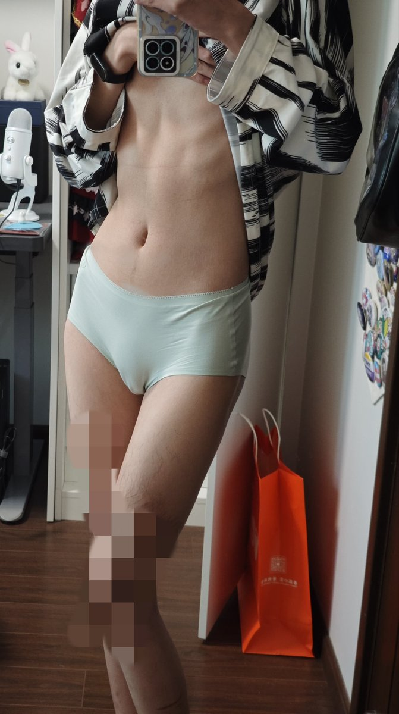

🍀🍥竹蜻蜓🍥🍀（诚聘对象版）
@zqtlovekris99
@huahuojiang_ 我的很突出(๑╹ヮ╹๑)ﾉ但是不是这种形状的

🍀🍥竹蜻蜓🍥🍀（诚聘对象版）
@zqtlovekris99
我真觉得自己的身体很涩啊，天天对着自己的照片手冲。喜欢这种超级瘦的感觉，很有骨感。这是否算一种自体女性恋？
以及我下面这么大了会不会去女更被人赶出来啊(๑╹ヮ╹๑)ﾉ https://t.co/zaP7JZ4ofE
花火酱～
@huahuojiang_
@zqtlovekris99 我不信有人的外阴能突出到这个程度